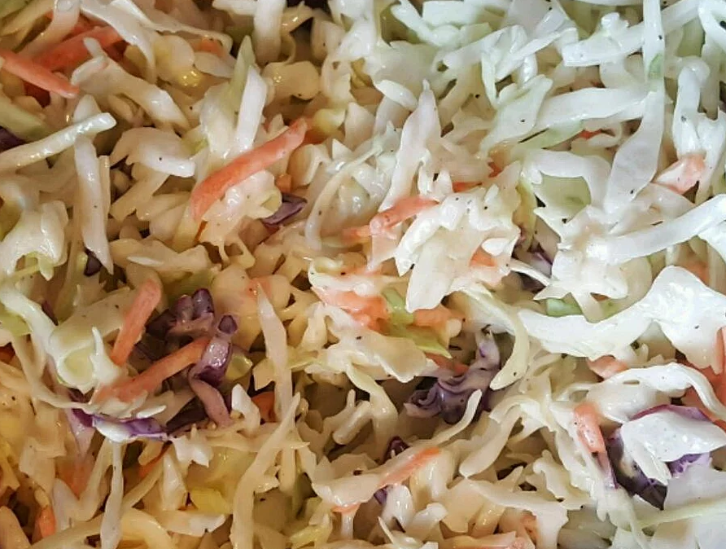

Easy Coleslaw Dressing

Recipe description
A creamy coleslaw dressing that can be made with ingredients you already have! You can pour it immediately over a 14-ounce package of coleslaw mix or refrigerate until needed.
Ingredients
- 0.5 cup mayonnaise
- 2 tbsp white sugar
- 1.5 tbsp lemon juice
- 1 tbsp vinegar
- 0.5 tsp ground black pepper
- 0.25 tsp salt
Steps
-
Whisk mayonnaise, sugar, lemon juice, vinegar, pepper, and salt together in a bowl until smooth and creamy.
Other recipes